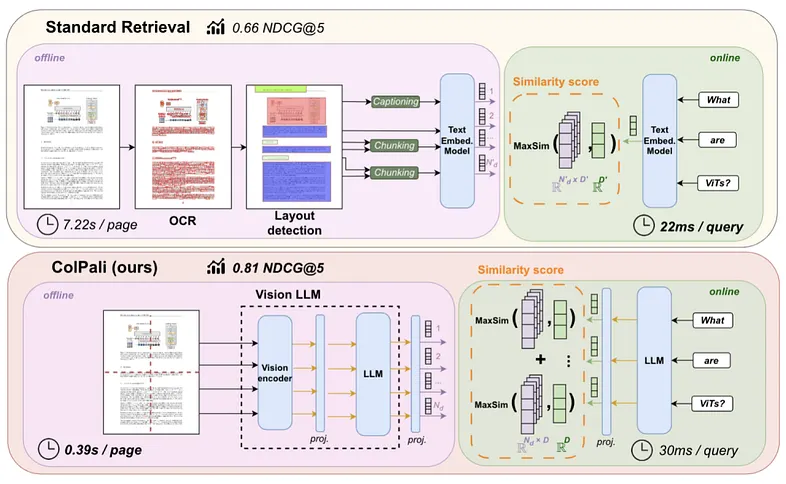
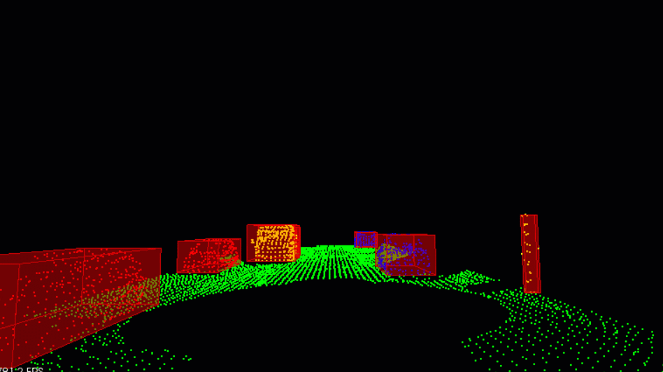
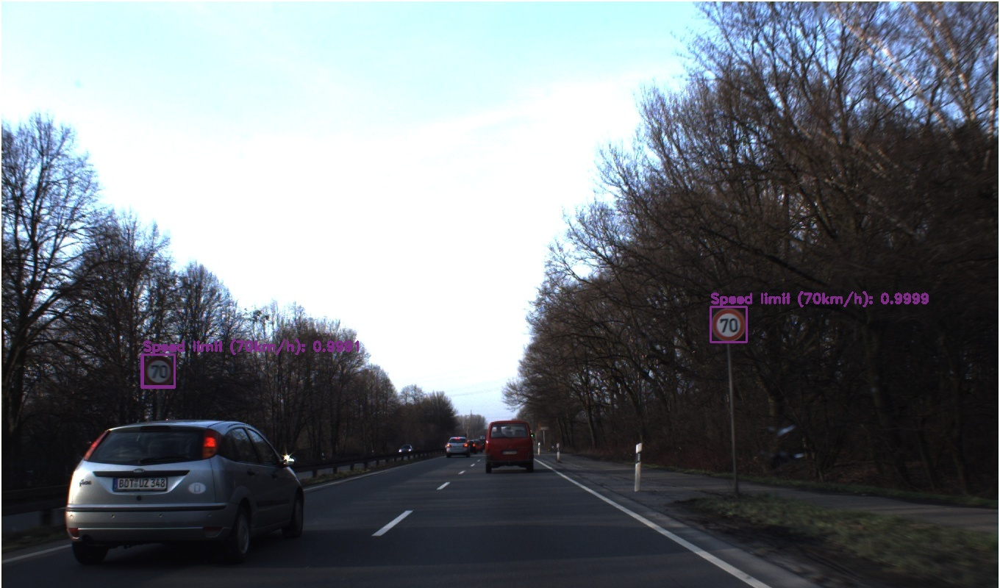
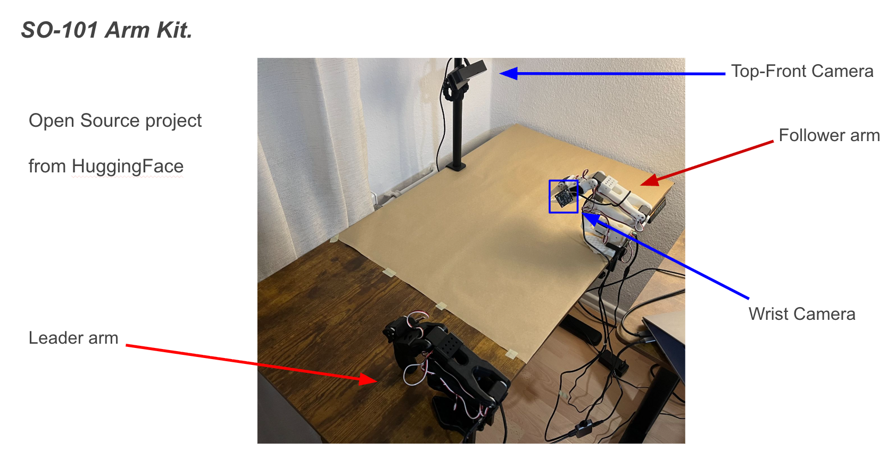

VLM Fine-tuning with Blind Judge Evaluation

Overview
I fine-tuned a Vision-Language Model (VLM) using ORPO (Odds Ratio Preference Optimization) and then designed a custom evaluation framework to rigorously measure the improvement. The challenge wasn't just training the model, it was building a trustworthy way to evaluate it, which standard benchmarks don't provide out of the box.
What I Built
- ORPO fine-tuning pipeline: Applied preference optimization to LLaVA-Next (Mistral-7B) on the RLAIF-V dataset, training for 1,000 steps and achieving stable loss reduction from 3.0 to 1.5
- Blind judge evaluation system: Designed an evaluation setup where GPT-4o-mini scores model outputs without knowing which response came from which model, eliminating the positional and label bias that plagues most LLM-as-judge setups
- Comparative analysis: Ran both a standard (non-blind) and blind evaluation to expose the gap between biased and unbiased scoring, revealing how conventional evaluation overstates improvement
- Interactive Gradio demo: Built a visual interface to test and compare base vs. fine-tuned model responses side by side
Key Technical Decision
Most projects stop at reporting a score improvement. I went a step further by questioning whether that improvement was real or an artifact of evaluation bias. By randomizing model identity in the judge prompt, I found the results were more balanced than the non-blind run suggested, the fine-tuned model still won (7.25 vs. 6.92), but the gap narrowed. This kind of methodological rigor is what separates reliable ML evaluation from inflated results.
Results
- Non-blind: Fine-tuned 7.58 vs. Base 6.43 — 9 wins out of 10 samples
- Blind (unbiased): Fine-tuned 7.25 vs. Base 6.92 — 6 wins out of 10 samples
Read the full documentation of the project:
PDF DocumentationTechnologies & Tools
- Model: LLaVA-Next (Mistral-7B) with CLIP vision encoder
- Training: PyTorch, Transformers, PEFT, TRL (ORPO trainer)
- Evaluation: GPT-4o-mini as blind LLM judge
- Interface: Gradio for interactive model comparison
Vision-based Multimodal RAG System

Overview
I built a multimodal RAG system that can answer natural language queries about PDF documents, including charts, figures, and tables by treating each page as an image rather than extracting raw text. This sidesteps a fundamental limitation of traditional RAG pipelines, which discard visual layout and non-textual content during parsing.
The system is grounded in the ColPali method, which embeds document pages directly as visual patches using a vision language model, enabling retrieval that preserves the full visual context of each page.
What I Built
- End-to-end vision RAG pipeline: Designed and implemented the full system from PDF ingestion to final answer generation, indexing, retrieval, and LLM querying in a clean modular structure
- Visual page indexing: Integrated
vidore/colqwen2-v0.1via Byaldi to build a visual index from PDF pages, embedding each page as an image instead of extracted text - Multimodal answer generation: Connected the retrieval output to an OpenAI-compatible vision LLM, passing the top-k retrieved page images alongside the user query to produce grounded answers
- Configurable design: Centralized all key parameters LLM endpoint, embedding model, query, number of retrieved pages in a single
config.py, making the system easy to adapt to new documents and models
Key Technical Decision
Traditional RAG systems extract text from PDFs and embed it as strings, losing all visual structure. I deliberately chose a vision-first approach using ColPali, where the retriever never sees extracted text, it scores pages based on visual embeddings. This makes the system far more capable on real-world documents that mix text with figures, diagrams, and formatted tables.
Technologies & Tools
- Retrieval: ColQwen2 (
vidore/colqwen2-v0.1) via Byaldi - Generation: OpenAI-compatible API with any vision-capable LLM
- Stack: Python 3.10, Pillow, pdf2image, Poppler, Conda + CUDA
Resources
- GitHub Repository: View Full Project
- ColPali Paper: Efficient Document Retrieval with Vision Language Models
Procurement AI Agents

Overview
I built a multi-agent AI system that automates product research for procurement. The core problem it solves: manually searching across multiple e-commerce platforms, comparing specs and prices, and compiling findings into a report is tedious and inconsistent. I replaced that entire workflow with a pipeline of four specialized LLM agents that collaborate to go from a product request to a structured procurement report with no human steps in between.
What I Built
- Four-agent pipeline: Designed and orchestrated a multi-agent system using CrewAI where each agent has a distinct, scoped responsibility — query generation, search execution, data extraction, and report authoring — with structured outputs passed between them
- Intelligent query formulation: Built a query generation agent powered by Llama 3.3-70B that takes a natural language product request and produces targeted search queries optimized for e-commerce discovery across platforms like Amazon, Otto, and MediaMarkt
- Real-time product search: Integrated the Tavily API to run live searches and retrieve product listings, handling multi-platform results in a single pass
- Structured web scraping: Connected ScrapeGraph to extract product specifications, pricing, and availability from raw e-commerce pages — turning unstructured HTML into clean, validated data using Pydantic schemas
- Automated report generation: Implemented a report agent that takes the structured product data and compiles it into a professional HTML report with side-by-side comparisons and a final recommendation
Key Technical Decision
Rather than building a monolithic LLM prompt that tries to do everything, I decomposed the workflow into agents with single responsibilities. This made each step testable and replaceable independently — for example, swapping Tavily for a different search API or changing the scraping strategy doesn't break the rest of the pipeline. Using Pydantic for inter-agent data validation was critical to prevent malformed data from propagating silently through the chain.
Technologies & Tools
- Orchestration: CrewAI for multi-agent workflow management
- LLMs: GPT-4o for reasoning and analysis, Llama 3.3-70B for query generation and report writing
- Search: Tavily API for real-time multi-platform product search
- Scraping: ScrapeGraph API for structured data extraction from e-commerce pages
- Validation: Pydantic for structured, type-safe inter-agent outputs
Resources
- GitHub Repository: View Full Project
LiDAR 3D Obstacle Detection on Point Cloud Data

Overview
I built a complete LiDAR obstacle detection pipeline that processes raw 3D point cloud data from a LiDAR sensor and identifies road obstacles in real time, placing precise 3D bounding boxes around each detected object. The pipeline runs entirely in C++ using the Point Cloud Library (PCL) and handles a continuous stream of LiDAR frames from a simulated environment.
What I Built
- RANSAC-based road segmentation: Implemented a custom RANSAC algorithm from scratch to fit a plane through the point cloud and separate road points (inliers) from obstacle points (outliers) — giving the pipeline a clean, noise-resistant way to isolate the drivable surface before any object detection runs
- Euclidean clustering with KDTree: Built a KDTree spatial index and implemented Euclidean clustering to group outlier points into individual obstacle clusters based on proximity thresholds — handling edge cases like partially occluded or fragmented objects (e.g. a truck split across front and rear clusters)
- 3D bounding box fitting: Wrapped each cluster in an axis-aligned 3D bounding box, making the detected obstacles directly usable downstream for tasks like trajectory prediction or collision avoidance
- Real-time streaming pipeline: Wired the full segmentation → clustering → bounding box pipeline to process LiDAR point cloud frames continuously, visualized live in PCL's 3D viewer
Key Technical Decision
Rather than relying on PCL's built-in RANSAC and clustering implementations, I implemented both algorithms from scratch. This was intentional, where it gave me precise control over the fitting criteria and distance thresholds, and forced a deeper understanding of how these algorithms behave on real sensor noise. The KDTree implementation in particular made clustering significantly faster than a naive nearest-neighbor search on large point clouds.
Technologies & Tools
- Language: C++
- Library: Point Cloud Library (PCL) for 3D data structures and visualization
- Algorithms: Custom RANSAC for plane fitting, custom KDTree + Euclidean clustering for object grouping
- Build: CMake on Ubuntu
Resources
- GitHub Repository: View Full Project
Traffic Signs Detection and Classification

Overview
I developed and presented a two-stage traffic sign recognition system as part of the Technology of Autonomous Vehicles Students Seminar, co-authored with Hanju Chen, Summer Semester, 2022. Rather than treating detection and classification as one problem, I decomposed them into two purpose-built models, a CNN classifier for 43-class recognition and a YOLOv4 detector then integrated them into a unified pipeline capable of processing both images and video in real time.
What I Built
- CNN classifier from scratch: Designed and trained a custom convolutional neural network in TensorFlow on the GTSRB dataset (43 traffic sign classes), applying dropout regularization and batch normalization to push test accuracy to 97.41% — handling the class imbalance and visual variation across sign categories
- YOLOv4 detection model: Configured and trained YOLOv4 on the GTSDB dataset using the Darknet framework, achieving a 64.7% mAP for localizing traffic signs in real-world scenes with varying scale, lighting, and occlusion
- YOLO format data pipeline: Built custom data preparation notebooks to convert the original GTSDB annotations into YOLO format and extended detection from 4 to 43 classes by converting the CNN model's output schema to match YOLOv4's label structure
- Integrated detection + classification pipeline: Combined both models using OpenCV so that detections from YOLOv4 are cropped and fed directly into the CNN classifier, producing end-to-end traffic sign recognition from raw images or video frames
- Research paper: Documented the full methodology, dataset analysis, model architecture decisions, and results in a formal research paper presented at the autonomous vehicles seminar
Key Technical Decision
I deliberately kept detection and classification as separate models rather than using a single end-to-end detector. This gave each model a focused objective: YOLOv4 handles spatial localization across the full image, while the CNN focuses entirely on fine-grained visual discrimination between 43 sign classes. The tradeoff is added pipeline complexity, but the classifier's 97.41% accuracy on tightly cropped sign patches would be hard to match from a detector trained on full scenes with heavy background noise.
Results
- Classification accuracy: 97.41% on the GTSRB test set (43 classes)
- Detection mAP: 64.7% on the GTSDB benchmark (YOLOv4)
Technologies & Tools
- Classification: TensorFlow, custom CNN with dropout and batch normalization
- Detection: YOLOv4, Darknet framework
- Integration: OpenCV for pipeline assembly and video processing
- Datasets: GTSRB (classification), GTSDB (detection)
Resources
- GitHub Repository: View Full Project
- Research Paper: Traffic Sign Detection and Classification (PDF)
SO-101 Teleoperation
Python scripts for leader-follower teleoperation of the SO-101 6-DOF robot arm using Feetech STS/SMS series servos.
The leader arm (passive, hand-held) is detected automatically by its lower supply voltage (~5 V).
The follower arm (powered, ~12 V) mirrors the leader's joint positions in real-time.
Joint Map
| ID | Joint |
|---|---|
| 1 | shoulder_pan |
| 2 | shoulder_lift |
| 3 | elbow_flex |
| 4 | wrist_flex |
| 5 | wrist_roll |
| 6 | gripper |
Demo

Requirements
- Python 3.10+
- vassar-feetech-servo-sdk
- Two USB-to-Serial adapters (one per arm)
Install dependencies:
pip install -r requirements.txtSetup
1. Find Serial Ports
Plug in both arms and run:
python find_ports.pyNote the two port paths (e.g. /dev/ttyACM0, /dev/ttyACM1).
2. Calibrate
Calibrate each arm once before first use. This sets the current physical position as the servo neutral (raw value 2048).
# Leader arm
python calibrate.py --leader /dev/ttyACM0
# Follower arm
python calibrate.py --follower /dev/ttyACM1Hold each arm in its desired home position before pressing Enter when prompted.
3. Teleoperate
Connect both arms and run:
python teleoperate.pyThe script auto-detects which arm is the leader and which is the follower based on supply voltage.
Options:
--frequency HZ Control loop frequency (default: 200 Hz)
--no-print Suppress per-cycle position outputExample:
python teleoperate.py --frequency 100 --no-printConfiguration
All shared constants (servo IDs, names, type, voltage threshold, default frequency) live in config.py.
Project Structure
SO-101-Teleoperation/
├── config.py # Shared constants (servo IDs, names, thresholds)
├── teleoperate.py # Main leader-follower teleoperation loop
├── calibrate.py # One-time arm calibration utility
├── find_ports.py # Scan and list connected servo ports
├── requirements.txt
└── README.mdThe SO-101 Robotic System — Imitation Learning with VLA Models
To further explore imitation learning, I've been working with the SO-101 Kit, an open-source project from HuggingFace. This setup is designed to test the limits of Vision-Language-Action (VLA) models in a controlled environment. In this project I fine-tuned two models to conduct a pick-and-place task: SmolVLA and ACT.
My Collected Human Demonstritation Datasets:
- 🗂️ Old setup data: maanm/pick-place-00
- 🗂️ New setup data: maanm/pick-place-01
- 📊 Visualize the dataset: LeRobot Dataset Visualizer
- 🤗 Models: huggingface.co/maanm
Hardware Setup

Open-source SO-101 Arm Kit from HuggingFace — annotated hardware components.
| Component | Description |
|---|---|
| Leader Arm | Input device for human demonstrations |
| Follower Arm | Primary 5-DOF manipulator executing the task |
| Top-Front Camera | Provides global spatial context for scene understanding |
| Wrist Camera | Mounted on the end-effector to mitigate occlusions and provide precise local visual feedback |
The architecture uses a 1:1 teleoperation mapping. By moving the leader arm, the operator generates the haptic-visual pairs necessary for the dataset. This leader-follower synergy ensures that the proprioceptive data from the follower is perfectly aligned with the visual demonstrations.
Old Setup — Identified Problems

ACT inference on the old setup, the picking task fails.
The old setup suffered from several issues that hindered model performance and capped the ACT model at a baseline of 3x inference speed:
- Bad lighting & inconsistent backgrounds — introduced high-frequency noise, making feature extraction unstable
- Camera angle variability — slight shifts in the top camera resulted in coordinate mapping errors
- Proprioceptive misalignment — the operator was teleoperating by looking directly at the follower arm, creating a distribution shift since the operator's control decisions were decoupled from the camera's perspective — the only reality the model actually "sees"
These factors effectively broke the visual feedback loop, leading to spatial distribution shifts that the model could not generalize during autonomous inference.
Teleoperation Methodology

Teleoperation session, operating the leader arm while watching exclusively through the camera feeds on the monitor.
To fix the old setup issues, I implemented a refined methodology:
- Standardized the lighting across all recording sessions
- Viewed the workspace exclusively through the visual feed (the monitor), ensuring that the demonstration data perfectly matched the model's inference environment
This creates the high-fidelity feedback loop required for successful imitation learning.
Model Inference & Performance
SmolVLA

SmolVLA inference, the robot successfully completes the pick-and-place task. Note: when the bowl is moved to a new position at the end, the robot fails, this is an out-of-distribution scenario not seen during training.
SmolVLA — Picking Purple Side

SmolVLA inference, the robot successfully picks the purple side of the cube, a color variant not present in the training data. This demonstrates SmolVLA's ability to ground linguistic instructions in visual space.
ACT Model

ACT model inference, the robot struggles with the pick but ultimately succeeds with minor human assistance.